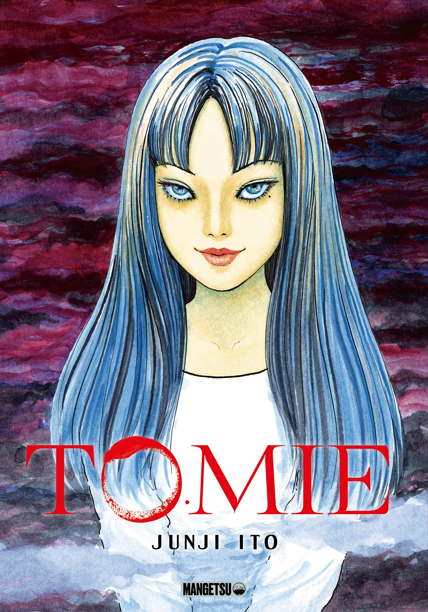

Tomie es un manga de terror escritas por Junji Ito que presenta a una misteriosa joven inmortal llamada Tomie Kawakami. Cada persona que se encuentra con Tomie queda obsesionada con ella, lo que provoca enloquecimiento y tragedia mientras ella sobrevive una y otra vez, incluso después de ser mutilada o asesinada.
Descripción: Tomie es un clásico del horror psicológico y body horror que explora temas como la obsesión, la belleza letal y la fragmentación de la identidad. La protagonista regresa perpetuamente a la vida, multiplicándose y corrompiendo a quienes la rodean.
El manga original de Tomie se publicó en la revista Monthly Halloween en 1987 y fue recopilado en volúmenes por la editorial Asahi Sonorama.
Tomie ha inspirado múltiples adaptaciones cinematográficas japonesas, donde el terror se amplifica a través de su naturaleza inmortal y manipuladora.
Ilustración: Junji Ito
Editorial: Asahi Sonorama